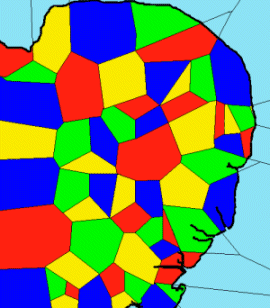

Fruit Flies and Cell Phones
As our first example, we take a nature-inspired solution to a particular telecommunications problem. Mobile phone network operators have to produce good channel allocation plans to get the most out of their network. Fruit flies have to produce a good bristle pattern to sense the world around them. Inspired by the fruitfly solution to its bristle problem, we have produced a channel allocation method with significant advantages over existing techniques [15].
In a mobile phone network, the handset communicates with a nearby base station by radio. The radio spectrum available is divided up into a number of 'channels' so that many users can make calls at any one time. Each user conducts a conversation on one channel without hearing other users' conversations on different channels. It is possible for two users to use the same channel, without suffering interference on their call, providing that they are sufficiently far apart geographically [16].
The network operator attempts to ensure that each base station has sufficient channels to meet demand while also ensuring that nearby base stations do not use the same channels.

Fig 2. An example of a channel allocation plan for East Anglia. The different coloured regions are the coverage areas of base stations using different channels. There are four different channels shown in red, blue, green and yellow. Although the coverage areas are realistic, the use of just four channels, with one channel assigned to each base station, is not.
Fruitflies have an insensitive exoskeleton peppered with sensors formed from short bristles attached to nerve cells [17].It is important that the bristles are more or less evenly spread out across the surface of the fly. In particular it is undesirable to have two bristles right next to each other. The correct pattern is formed during the fly's development by interactions among its cells. The individual cells 'argue' with each other by secreting protein signals, and perceiving the signals of their neighbours [18]. The cells are autonomous, each running its own 'algorithm' using information from its local environment. Each cell sends a signal to its neighbours; at the same time it listens for such a signal from its neighbours. The signal is saying, in effect, "I want to make a bristle". The more 'loudly' it 'hears' its neighbours signalling, the less of the signal it produces. In other words the signal is inhibitory. This 'arguing' process is the inspiration for the channel allocation method presented here.
|
|
||||||||
|
||||||||
Fig 3. The diagram on the left shows the mechanism of cell "argument".
The red signal is perceived by the green receptor and acts to reduce
the amount of red signal made by the receiving cell. Panel A shows
the back of a real fruitfly, with the correct pattern of bristles.
B diagrams the progress of a group of cells towards a good pattern:
many cells acquire the potential to make bristles (grey shading),
of these a few increase bristle-making tendency (black) and inhibit
their neighbours (lighter grey and ultimately white). C and D show
this process in real tissue. C is the earlier picture, with many cells
staining dark for bristle potential. In the later picture (D) most
cells are much lighter (less likely to make bristles) but a few are
black (certain to make bristles)[19]
The effect of this is that high levels of the signal in two (or more) neighbouring cells is an unstable situation which tends to move towards one of the stable states in which only one of the cells continues to generate a high level of signal, and the other (or others) is inhibited. The cell with a high level of signal will ultimately make a bristle, while its inhibited neighbours will resign themselves to making exoskeleton. This process generates an acceptable bristle pattern and a robust exoskeleton by ensuring that there will be no adjacent bristles.
At present, mobile network operators use a static channel allocation plan. In other words, channels are allocated to base stations and will remain so allocated until the plan is reviewed. This procedure has a couple of disadvantages. Most obviously it cannot accommodate changes in network traffic over time - even predictable changes. Dynamic planning is attractive because it can reduce the blocking rate simply by redistributing existing capacity. The other chief disadvantage of the planning process is that it is centralised. It relies on information being gathered and sent to a central decision-maker. Any decision can only be as good as the information it is given, so the best optimiser in the world won't be much use if fed inaccurate or outdated information. The issue of which base stations are sufficiently far apart that they can be allocated the same channel is difficult to resolve and relies on a combination of measurements and radio wave propagation models.
A Fruitfly-inspired Solution
Base stations are equated with cells and are given the ability to choose which channels they will use. For each of the available channels they 'argue' with their neighbours. Each base station sends a signal to its neighbours saying "I want to use this channel". The louder it 'hears' its neighbours signalling their intention to use that channel, the weaker its own signal becomes. Initially all base stations have an almost equal "preference" for all of the available channels. Over time a base station will increase its preference for a few channels while abandoning all claim to the other channels. Neighbouring base stations will avoid using the same channels for exactly the same reason that neighbouring cells in the fruitfly avoid both forming bristles [15]. The idea of allowing base stations to negotiate using this type of inhibition algorithm is novel, was found only by analogy with nature, and has now been patented.
This fruitfly-inspired approach has several advantages over the current static, centralised method. The solution is updated dynamically in real time. As demand in the network changes, the usage of channels by different base stations will change. If demand falls at one base station, it gives up channels. If demand rises, it grabs more channels. Varying demand across the network is met by the dynamic shuffling of channels. Although the base stations do not 'realise' it, and the algorithm is working locally, they are in effect running a pool of channels, allowing resources to be dynamically redistributed to meet demand. Also, since each base station is doing its own decision making, based only on the signals it perceives from its neighbours, the difficulty of the problem and the time taken to solve it do not increase as the network gets bigger. The local execution of the algorithm by the base stations also results in a network which degrades gracefully in the event of node failure. If a base station fails, the channels it was using when it went down are released to be exploited by the remaining base stations. Finally, note that this is an 'anytime' algorithm: an answer is always available and is continuously improved against real-time variations.
The video in figure 4 shows a demo of this approach in action on a simulated network of 58 base stations.
Six channels, from a choice of 29, must be allocated to each of the 58 base stations in East Anglia. There are two 58 x 29 matrices of red dots. The 58 base stations are in order along the horizontal and the 29 channels available to be allocated are in order up the vertical. The upper matrix represents the search for solutions. The intensity of red at each position represents the strength of the tendency for that base station to use that channel. The lower matrix represents the current solution, derived from the upper matrix search. Initially, all base stations have almost equal tendency to use all channels. As time goes on, heterogeneities emerge due to the interactions between base stations. The total interference in the network is plotted in yellow. It falls towards zero (plotted in white). Halfway through the video, some columns of the matrices turn green. This is to highlight an increase in demand. These base stations now require 9 channels instead of 6 (simulating traffic jams or accidents). Channels are allocated accordingly and the total interference is not greatly affected.
© Copyright British Telecommunications plc 1999